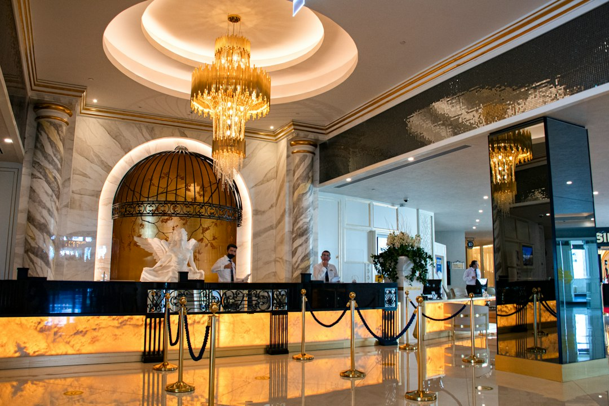

Napoli e l’Ospitalità Congressuale: Come Concierge24 Riduce Sprechi e Costi per Albergatori e Gestori

Napoli e l’Ospitalità Congressuale: Guida Operativa per Albergatori, Gestori di B&B, Property Manager e Agenzie Turistiche
- Napoli punta decisamente oltre il turismo tradizionale verso il settore congressuale, ampliando le opportunità di business per l’ospitalità.
- Il rischio principale per gli operatori è rappresentato da richieste ripetitive H24 e barriere linguistiche con ospiti stranieri, che generano sprechi costosi di tempo e risorse.
- Concierge24 con Giulia, l’assistente AI multilingua, offre una soluzione integrata e scalabile per automatizzare la comunicazione e facilitare la gestione operativa riducendo drasticamente costi e inefficienze.
Analisi Approfondita della Notizia e delle Implicazioni Operative
Il recente focus di Forbes Italia sulla trasformazione di Napoli nel polo dell’ospitalità congressuale evidenzia un trend in crescita significativa: la città campana si sta affermando come meta privilegiata per eventi, meeting e convegni su scala nazionale e internazionale. Questa nuova dimensione di ospitalità si affianca al turismo tradizionale e richiede un modello gestionale più sofisticato e flessibile, capace di soddisfare esigenze molto articolate e personale altamente efficiente.
Gli operatori del settore alberghiero, dai grandi hotel alle strutture più piccole come B&B e case vacanza, si trovano così di fronte a una sfida quotidiana: gestire un flusso continuo di richieste da parte di una clientela business, esigente e spesso internazionale, con tempistiche ridotte e aspettative elevate.
Le richieste riguardano non solo i servizi basilari come check-in/check-out, accesso a wifi e parcheggio, ma anche informazioni utili e personalizzate su ristoranti, attrazioni locali e logistica. Il tutto deve essere offerto in più lingue, abbattendo così barriere linguistiche che rischiano di compromettere l’esperienza degli ospiti e la reputazione della struttura.
Le Conseguenze e i Costi di Non Agire
La mancata ottimizzazione del flusso comunicativo comporta sprechi evidenti sotto molteplici aspetti. Ricorrenti interruzioni per rispondere a domande frequenti congestionano il lavoro del personale, sottraendo tempo prezioso da attività strategiche e di valore aggiunto. Questo si traduce in inefficienze che incidono direttamente sui costi operativi, spesso invisibili ma sostanziali.
Gli errori più comuni riguardano la duplicazione dello sforzo per gestire richieste identiche o molto simili, la difficoltà nel fornire risposte rapide e coerenti e la necessità di coinvolgere diversi interlocutori, specie in caso di ospiti stranieri. Le barriere linguistiche amplificano questi problemi, aumentando il rischio di incomprensioni e insoddisfazione, potenziali fattori di fuga clienti o recensioni negative.
Inoltre, la complessità organizzativa negli hotel e nelle strutture ricettive congressuali comporta costi nascosti: straordinari per il personale, investimenti in formazione continua, o addirittura la necessità di assumere personale dedicato alla reception e all’assistenza multilingue.
Come Concierge24 Risolve il Problema
Concierge24, il SaaS intelligente sviluppato da RM Studio, emerge come risposta naturale ed efficace a questo scenario critico. Grazie a Giulia, l’assistente vocale e testuale AI disponibile H24 in 10 lingue, Concierge24 automatizza e migliora l’interazione con gli ospiti sin dal loro arrivo.
La piattaforma gestisce con efficacia le richieste di check-in e check-out, elimina l’attesa per informazioni base, e consiglia in modo personalizzato attrazioni e ristoranti grazie alle mappe GPS integrate. La trasmissione di immagini direttamente sullo smartphone dell’ospite semplifica ulteriormente la comunicazione, rendendola fluida e intuitiva.
Concierge24 non è un semplice chatbot; è un assistente multicanale che comprende le esigenze specifiche del settore alberghiero congressuale, consente di abbattere le barriere linguistiche senza ricorrere a traduttori umani e libera il personale dall’onere di gestire continue richieste ripetitive. Questo porta a una riduzione drastica dei costi di gestione e a un risparmio importante di tempo, da reinvestire in attività strategiche e di miglioramento continuo dell’accoglienza.
Infine, la flessibilità dell’offerta, con prova gratuita di 7 giorni inclusiva di 15 minuti di utilizzo senza necessità di carta di credito, e ricariche a consumo a partire da 49€, permette un’adozione progressiva personalizzata in funzione delle esigenze e delle dimensioni della struttura.
| Aspetti Gestionali | Gestione Tradizionale | Con Concierge24 |
|---|---|---|
| Gestione richieste H24 | Personale dedicato, turni estesi, possibili ritardi | Automatizzata 24/7 senza limiti di orario |
| Barriere linguistiche | Necessità di operatori multilingua o interpreti | Assistant AI in 10 lingue gestisce tutte le richieste |
| Informazioni personalizzate su attrazioni e servizi | Richiede tempo e risorse per fornire indicazioni precise | Consigli GPS-based con mappe e foto inviate via smartphone |
| Risparmio di tempo | Basso, rischio disorganizzazione nelle ore di punta | Elevatissimo, con automatizzazione e standardizzazione delle risposte |
| Costi gestionali | Alti, legati a risorse umane e formazione | Controllati e scalabili con piano pay-per-use |
💡 Ti è stato utile questo approfondimento?
Condividilo con un collega o un amico del settore Albergatori, Gestori di B&B, Property Manager e Agenzie Turistiche a cui potrebbe interessare!
FAQ - Domande Frequenti per Albergatori e Gestori
1. Concierge24 è adatto anche per piccole strutture come B&B?
Assolutamente sì. Concierge24 è progettato per adattarsi a strutture di ogni dimensione grazie alla sua scalabilità e al modello a consumo che lo rende accessibile e conveniente anche per i piccoli operatori.
2. Quali lingue supporta l’assistente Giulia?
Giulia supporta 10 lingue principali, tra cui inglese, francese, tedesco, spagnolo, cinese e italiano, facilitando la comunicazione efficace con ospiti internazionali senza necessità di personale multilingue aggiuntivo.
3. È possibile integrare Concierge24 con i sistemi gestionali esistenti in hotel e strutture?
Sì, Concierge24 è sviluppato con un’architettura aperta che consente integrazioni flessibili con sistemi PMS e CRM già in uso, ottimizzando ulteriormente i flussi operativi.
Inizia Subito
7 Giorni di prova con 15 minuti inclusi senza carta. Ricariche minuti a consumo da €49.
Fonti Ufficiali e Risorse Esterne
Scopri l'Intelligenza Artificiale per la tua attività
Ottimizza i processi e aumenta le vendite con le soluzioni B2B di RM Studio.
Scopri Concierge24